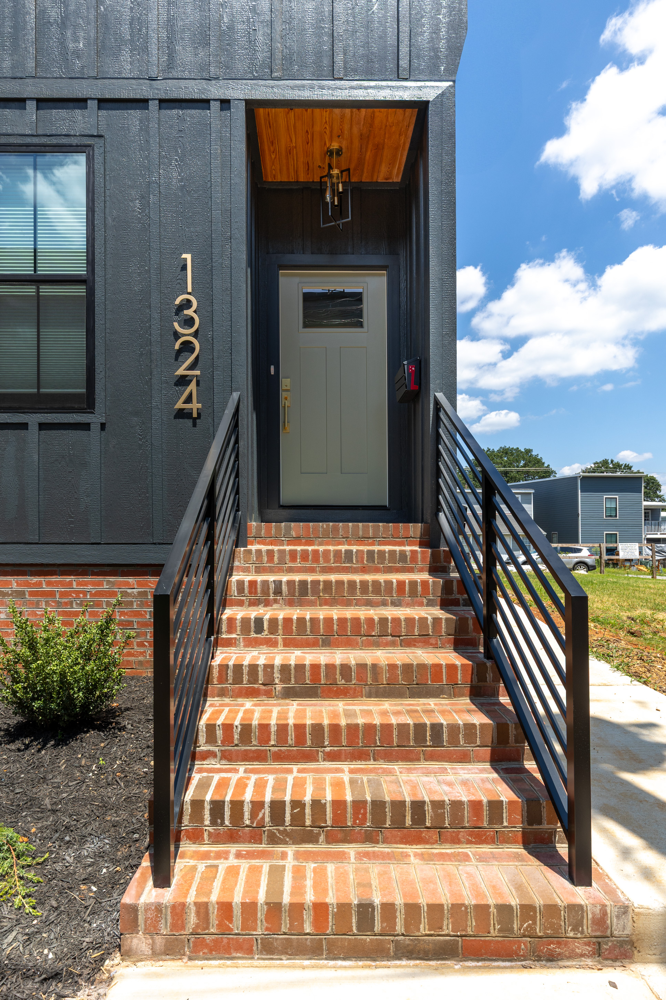
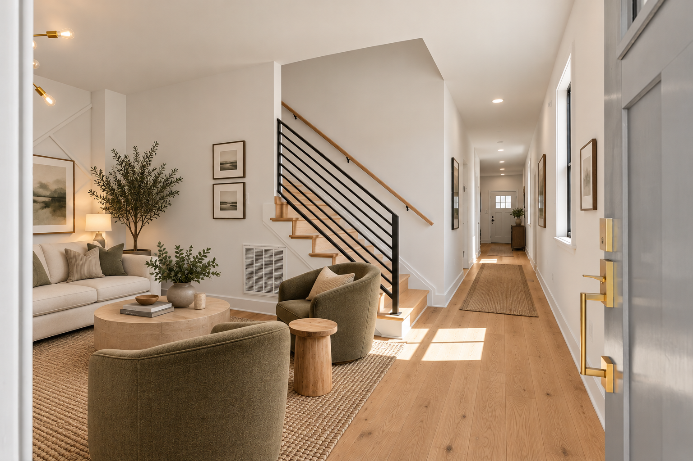
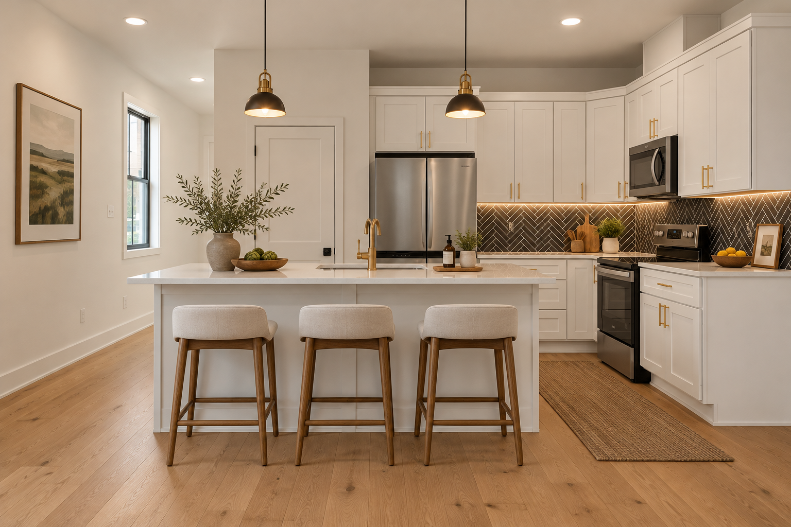
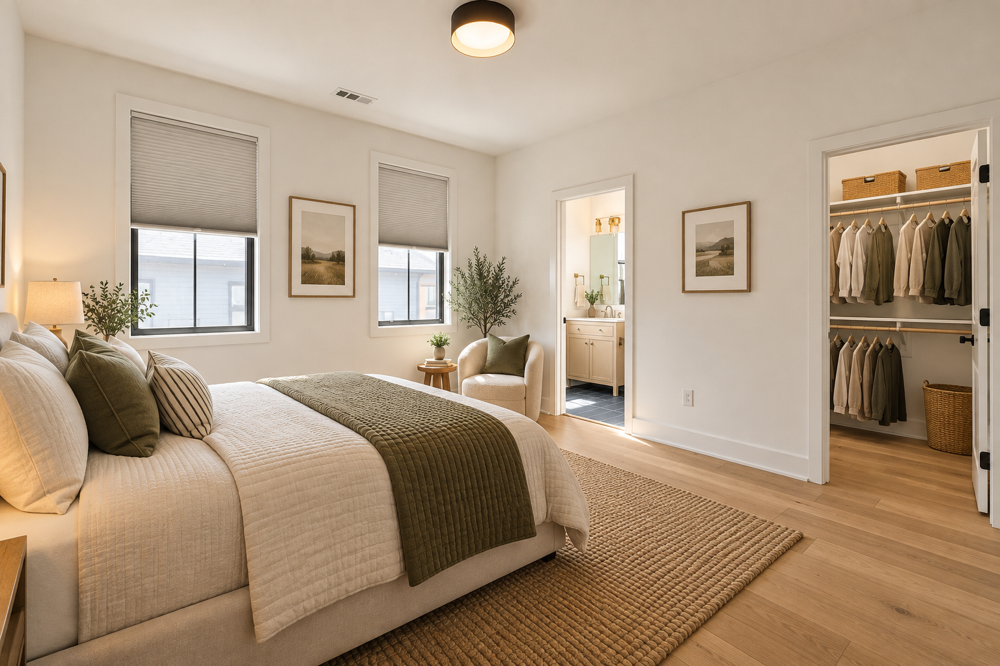
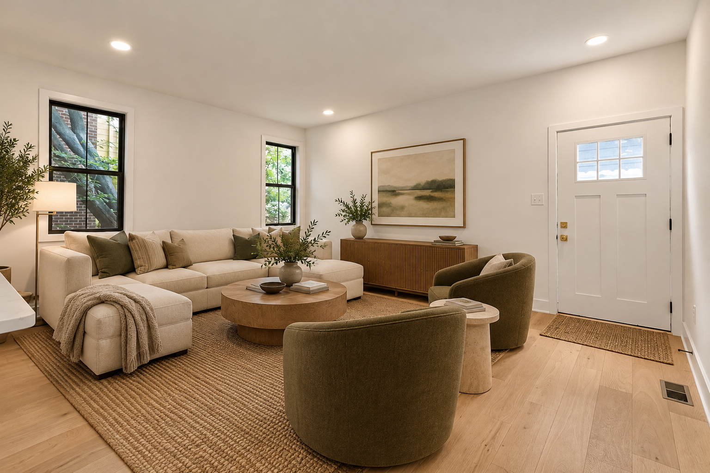
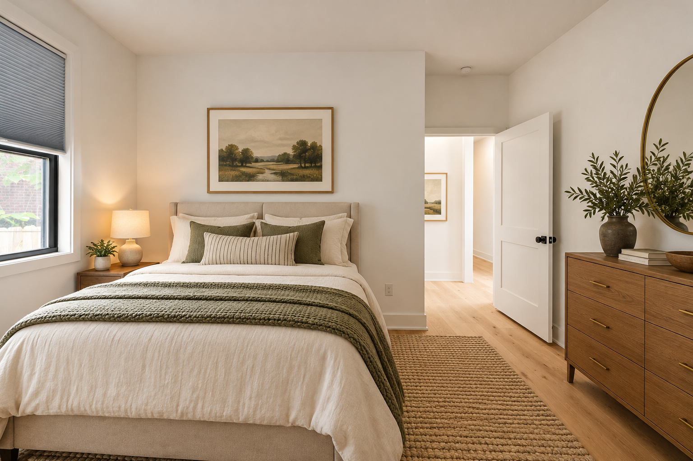
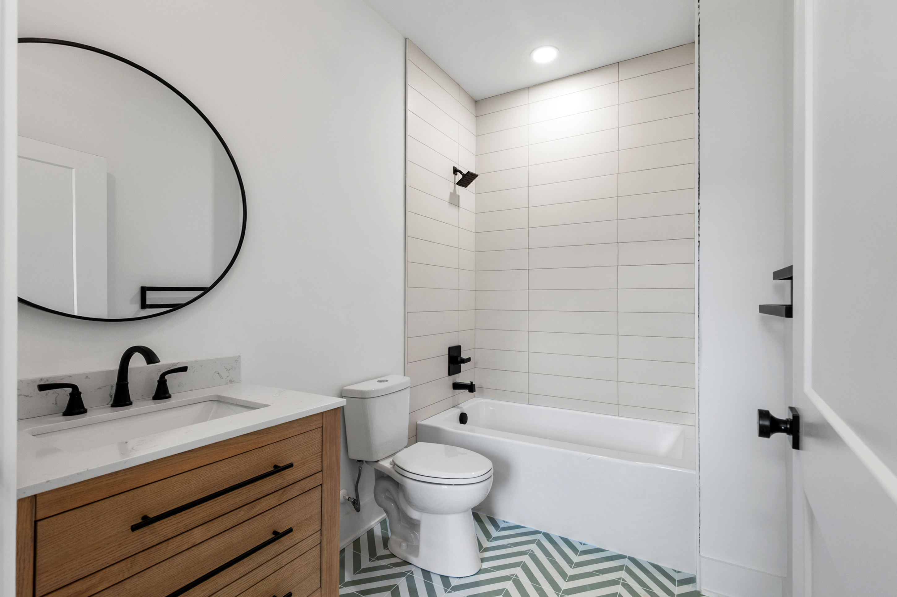

RICHMOND, VIRGINIA
1324 Catherine Street
4 BEDROOMS · 4 BATHROOMS · 2 LIVING ROOMS
THE RESIDENCE
Room to live.
Steps from VCU.
Brand-new construction with room to spread out, just a short walk from Virginia Commonwealth University and the Siegel Center. This spacious four-bedroom, four-bathroom home features two separate living rooms—giving everyone room to gather, unwind, study, or entertain. Fresh modern finishes and a convenient location make everyday Richmond living feel effortless.
AVAILABILITYAVAILABLE AUGUST 2027 · $3,700/MO
INQUIRE ABOUT THIS RESIDENCE →THE PROPERTY
Explore the residence.
Bright spaces, modern finishes, and room for everyday living.






